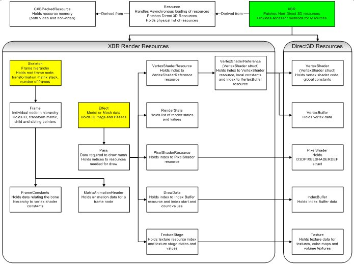

The XBR class does all of the data management and access to the bundled resource file. It inherits the Resource class that handles the file loading and memory initialization for the resource file. The Resource class in turn inherits the CXBPackedResource class, which is part of the samples framework. Again, remember that the XBR file is just a generalization of the original Bundler files, which CXBPackedResource was written to handle.

Illustration This chart shows all of the XBR classes and data structures and how they relate to each other.
The resource file is loaded asynchronously by calling Resource::StartLoading. The StartLoading function takes a pointer to the Direct3D device and the file name of the resource file to load. It first loads the "headers" for the XBR file. In the old bundler days, this contained the headers needed to fix up the texture and vertex buffer data stored in the Video Memory portion of the file. These headers now also contain the non-video data needed for the XBR file to work. These include things such as the index buffers, vertex shaders, pixel shaders, and so on.
After the headers are loaded, you allocate contiguous memory for the video data and start loading it using Overlapped I/O. You then return S_OK if everything was OK to this point. The load for contiguous memory now happens in the background and the application checks for completion using the Resource::PollLoadingState function. Once the load is complete, this function calls the Resource::OnIOComplete function, which fixes up the data. It then returns the current LOADINGSTATE, defined as follows:
| Value | Description |
|---|---|
| LOADING_NOTSTARTED | Loading hasn't started yet. |
| LOADING_HEADER | The Resource class is loading the "header" data. |
| LOADING_DATA | The Resource class is loading the video data |
| LOADING_DONE | Loading of all data was successfully complete. |
| LOADING_FAILED | Loading is done and it didn't work. Usually, this means that the load completed successfully, but the data wasn't in the correct format or attempting to do the fix ups for the data failed. See Fixing Up the Data After the Load for more details. |
When the Overlapped I/O has completed, Resource::OnIOComplete is called from Resource::PollLoadingState. The Resource::OnIOComplete function loops over all of the resources loaded, stores their header and type data and calls Patch for each resource. Patch is a virtual function defined in both the Resource and XBR classes. Patch is the code that fixes up the resource based on the resource type. As such, Patch takes the resource type and the resource header. The XBR::Patch function is called first and understands all of the new resource types and headers. If this version finds a resource type that it doesn't understand, it passes that resource to the Resource::Patch function. Resource::Patch is for patching the actual Direct3D resources using the IDirect3DResource8::Register call.
Instead of calling a function such as CreateTexture to load or initialize a resource, you simply call IDirect3DResource8::Register with the header information loaded from the resource file. The header you stored in the resource file is a IDirect3DResource8 pointer and you can cast the header as a resource pointer to call IDirect3DResource8::Register. The Register function uses the header information to fix up the pointer to the actual data in the video memory portion of your resource file.
Register accomplishes two things:
The destructor in the base class CXBPackedResource handles deleting all of the memory allocated by the resources. The base class also calls a Cleanup function for each resource just in case the resource allocated any memory on its own. The only "dangling" reference that is cleaned up in XBR::Cleanup is the vertex shader handle. All other resources disappear when you free the header and contiguous memory blocks.
Although XBR has many methods, only a few are described in detail: